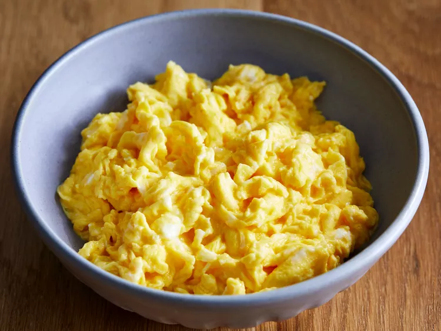

Fluffy Scrambled Eggs Recipe
This is my one of favourite breakfast to have. These light and fluffy Scrambled eggs are
made in the microwave for aquick and easy breakfast to start your day. Follow the
technique in this easy 3-ingredient recipe for perfect result every time.

Ingredients
- 4 large eggs
- 1/4 cup milk
- 1/8 teaspoon salt
Procedure
- Gather all ingredients.
- Break the eggs into a microwave-proof mixing bowl. Add milk and salt; mix well.
- Pop the bowl into the microwave and cook on high power for 30 seconds. Remove bowl, beat eggs very well, scraping down the sides of the bowl, and return to the microwave for another 30 seconds.
- Repeat this pattern, stirring every 30 seconds for up to 2 ½ minutes. Stop when eggs have the consistency you desire.
- Serve warm and enjoy!
Video Procedure
Back to Home